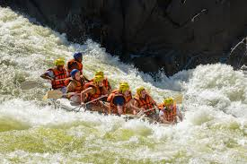
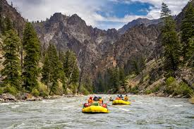
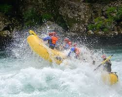

Ready for a Adventure?
Contact our experts to book your custom rafting experience today.
Contact Us
Zambezi River
This legendary day trip starts just below the famous Victoria Falls, taking rafters through a deep, dramatic gorge. It features 25 intense Class IV and V rapids, such as "Frog in the Blender" and "The Mother," offering some of the biggest commercially rafted water in the world.

Salmon River
Often ranked the best rafting trip in the world, this 100-mile journey flows through the Frank Church River of No Return Wilderness. It features pristine Class III-IV water, relaxing hot springs, excellent trout fishing, and sandy beach camping.

Futaleufu River
Known for its striking turquoise water and huge, powerful rapids, the "Fu" is located in Patagonia. The bridge-to-bridge section includes massive Class IV-V rapids like Casa de Piedra, offering technical and exhilarating whitewater in a stunning canyon setting.
| Trip | Duration | Difficulty | Price |
|---|---|---|---|
| Beginner's Splash | 3 Days | Class I-II | E150 |